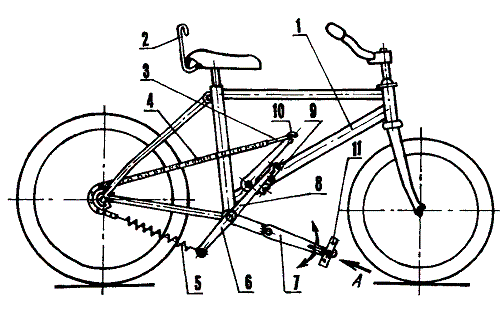

Докладчик: Viktor Kuliebiakin / victor@pingbull.no
/**
* Namespace
*/
wp.{ object }
wp_enqueue_script( 'script_name' );
Зачем изобретать велосипед, если кто-то уже это сделал?
wp.media
wp_enqueue_media();
var frame;
// some magic
frame = wp.media({
title: 'Insert Image(s)',
multiple: true,
library: {
type: 'image'
},
button: {
text: 'Insert into gallery'
}
});
// some magic
frame.open();
wp.ajax
wp_enqueue_script( 'wp-util' );
$some_function = function () {
// do something
};
/**
* For logged in users
*/
add_action( 'wp_ajax_some_action', $some_function );
/**
* For not logged in users
*/
add_action( 'wp_ajax_nopriv_some_action', $some_function );
wp_send_json( [
'success' => false,
'data' => [
'email' => __( 'Email is invalid.' )
]
] );
wp_send_json_success();
...
wp_send_json_success( [
// some answer
] );
...
wp_send_json_error( [
'email' => __( 'Invalid email address.' )
] );
jQuery.ajax('http://site.com/wp-admin/admin-ajax.php', {
data: {
action: 'some_action',
email: 'some@mail.com',
...
},
method: 'POST',
success: function (response) {
if (response.success) {
// do something with response.data
} else {
// show error etc. from response.data
}
}
});
wp.ajax.send('some_action', {
data: {
email: 'some@mail.com',
...
},
success: function (response) {
// do something with response
},
error: function (error) {
// show error etc.
}
});
wp.template
wp_enqueue_script( 'wp-util' );
<script type="text/html" id="tmpl-post">
// Your template
</script>
<script>
text/html
tmpl-
data
<article>
<h3>{{{data.title}}}</h3>
<# if (data.image) { #>
<figure>
<img src="{{data.image}}" alt="thumbnail">
</figure>
<# } #>
{{{data.excerpt}}}
<a href="{{data.permalink}}">Read more</a>
</article>
var tmpl = wp.template('post');
$('.post-list').append(template({
title: 'Hello World!',
image: 'path/to/image.jpg',
excerpt: '<p>Welcome to WordPress. This is your first post.</p>',
permalink: 'https://site.com/2015/05/29/hello-world/'
}));
<article>
<h3>Hello World!</h3>
<figure>
<img src="path/to/image.jpg" alt="thumbnail">
</figure>
<p>Welcome to WordPress. This is your first post.</p>
<a href="https://site.com/2015/05/29/hello-world/">Read more</a>
</article>
wp.html
wp_enqueue_script( 'shortcode' );
wp.html.string({
tag: 'input',
single: true,
attrs: {
type: 'email',
id: 'contact-email-1',
name: 'email',
'class': 'input-field',
placeholder: 'Your Email'
}
});
<input type="email" id="contact-email-1" name="email"
class="input-field" placeholder="Your Email" />
wp.shortcode
wp_enqueue_script( 'shortcode' );
var button = new wp.shortcode({
tag: 'button',
type: 'closed', // closed - default, single, self-closed
attrs: {
title: 'Click me!',
type: 'primary',
icon: 'palmtree'
},
content: 'Click me!'
});
button.string();
[button title="Click me!"
type="primary" icon="palmtree"]Click me![/button]
wp.shortcode.next(tag, text, index);
wp.shortcode.replace(tag, text, callback);
someText = wp.shortcode.replace('button', someText,
function (shortcode) {
return wp.html.string({
tag: 'button',
content: shortcode.content,
attrs: {
'class': shortcode.get('type')
+ '-button dashicons-' + shortcode.get('icon'),
title: shortcode.get('title')
}
});
}
);
some text
...
<button class="primary-button dashicons-palmtree"
title="Click me!">Click me!</button>
...
some text
wp.mce
wp_enqueue_script( 'mce-view' );
wp.mce.views.register('view_id', { object });
wp.heartbeat
wp_enqueue_script( 'heartbeat' );
newData = {
some: 'data'
};
data = wp.heartbeat.isQueued('your-key');
if (data) {
newData = jQuery.extend(data, newData);
}
wp.heartbeat.enqueue(
'your-key',
newData,
true
);
jQuery(document).on('heartbeat-tick', function(event, data) {
if (data.hasOwnProperty('your-key')) {
// do something with data
}
});